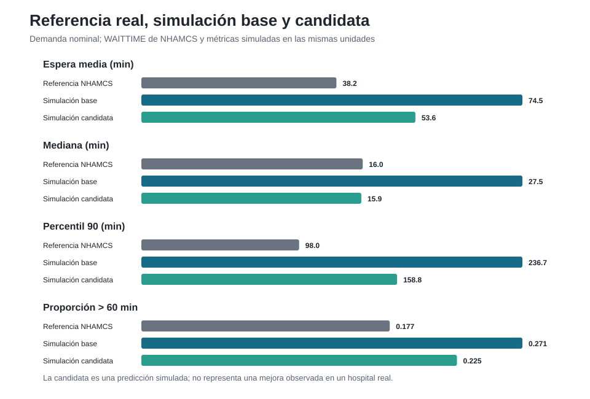
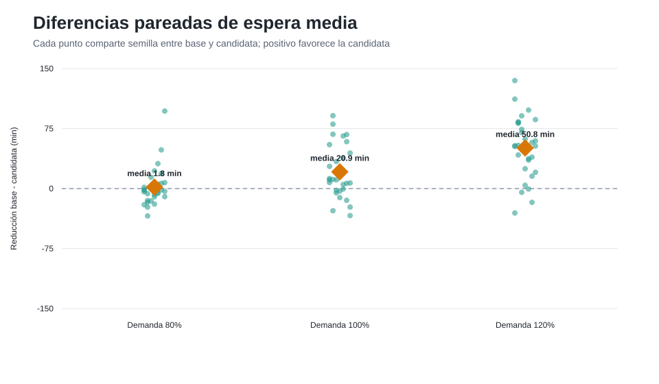

Simulación de eventos discretos y algoritmo genético en un departamento de emergencias de referencia
6 bloques de 4 h · 23 unidades/día (92 horas-equipo) · sin aumentar recursos
CC3074 Modelización y Simulación · Sección 30 · Universidad del Valle de Guatemala
Pablo Barillas · Jorge Palacios · Adrián González · Andrés Chivalán · Javier Chen
ARRTIME · IMMEDR → llegadas y triajeWAITTIME → validación independienteReferencia nacional de EE. UU.: no representa un hospital guatemalteco específico.
Poisson no homogéneo, tasa por hora (≈ 64 pacientes/día)
Niveles 1–5 con probabilidades de NHAMCS
Prioridad clínica, sin expropiación
Lognormal (σ = 0,45), medianas de 35 a 120 min
Capacidad por bloque de 4 h · SimPy · espera = tiempo hasta que un equipo inicia la atención
LOV solo como cota)9 generaciones, 61 horarios evaluados, semillas 10000–10009 solo para elegir la candidata.
| Bloque | 00–04 | 04–08 | 08–12 | 12–16 | 16–20 | 20–24 | Total |
|---|---|---|---|---|---|---|---|
| Base | 3 | 3 | 4 | 4 | 5 | 4 | 23 |
| Candidata | 1 | 2 | 5 | 5 | 6 | 4 | 23 |
| Llegadas (% del día) | 8 | 8 | 22 | 23 | 22 | 16 |
Menos equipos de madrugada, más en las horas de mayor demanda. Congelada antes de la evaluación final.
streamlit run app.pyPlan B: evidencia precomputada y figuras en evidence/final/figures/.
| Factor | Niveles |
|---|---|
| Horario | base · candidata congelada |
| Demanda (sensibilidad) | ×0,8 · ×1,0 · ×1,2 |
| Réplicas | 30 por condición → 6 condiciones, 180 ejecuciones |
| Semillas | optimización 10000–10009 · evaluación 30000–30029 (pareadas) |
Cada pareja base/candidata usa la misma semilla. Todas las cohortes se drenan: 0 pacientes sin atender.
| Demanda nominal | Media | Mediana | P90 | >60 min |
|---|---|---|---|---|
| NHAMCS | 38,2 | 16,0 | 98,0 | 17,7 % |
| Base | 74,5 | 27,5 | 236,7 | 27,1 % |
| Candidata | 53,6 | 15,9 | 158,8 | 22,5 % |
Minutos. MAE: base 62,2 · candidata 25,5. El modelo sobreestima; la cola larga se reproduce peor.

Acercarse a NHAMCS no valida la mejora: la candidata no se ajustó a esa referencia. La mejora es simulada, no observada.

python -m pip install -e ".[dev]" · pytest (56 pruebas)python scripts/generate_evidence.py --smoke y python scripts/generate_evidence.pystreamlit run app.pyevidence/final/ (runs, summary, paired_summary, manifest)